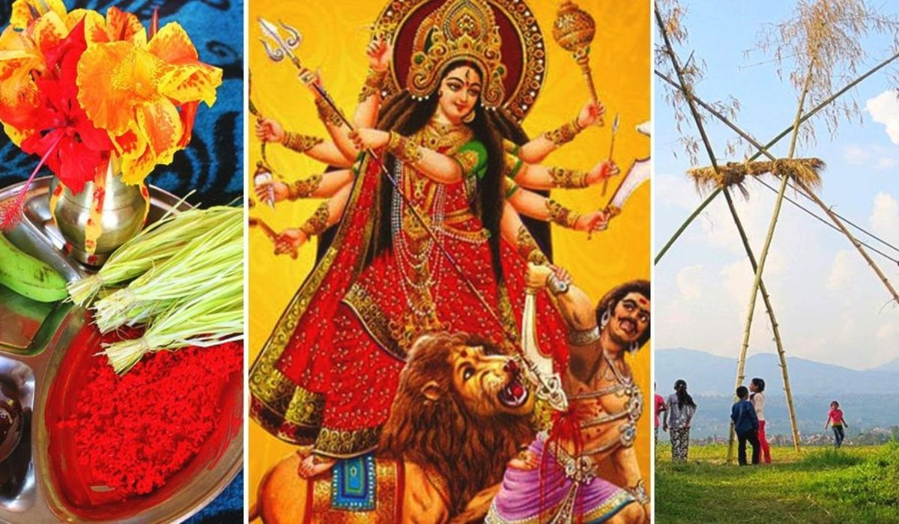
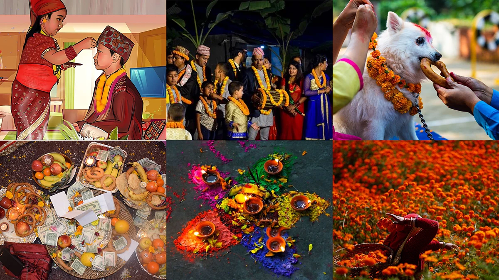
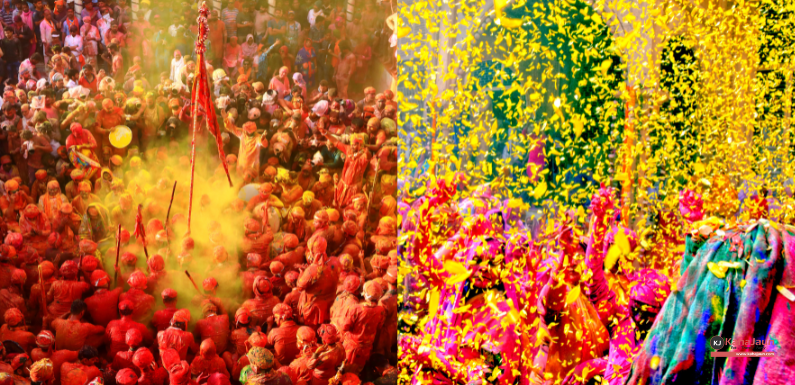
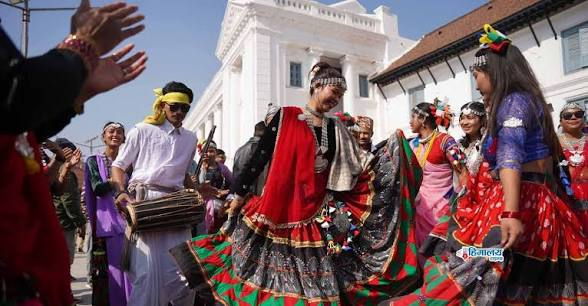

Biggest festival in Nepal.
Dashain is the biggest and most important festival of Nepal, celebrated by Hindus with great joy and family gatherings. It usually falls in September or October and lasts for 15 days. During Dashain, people worship Goddess Durga, receive blessings from elders, and enjoy delicious food, especially meat, selroti, and sweets. It symbolizes the victory of good over evil and brings families together.

Festival of lights.
Tihar is a major festival of Nepal also known as the festival of lights. It is celebrated for five days and honors animals like crows, dogs, cows, and oxen, as well as Goddess Laxmi, the goddess of wealth. People decorate their homes with lights and rangoli, worship Laxmi for prosperity, and enjoy Deusi-Bhailo singing with family and friends. Tihar brings happiness, light, and togetherness.

Festival of colour.
Holi is a colorful and joyful festival celebrated in Nepal and India, known as the festival of colors. It usually falls in March and marks the arrival of spring and the victory of good over evil. People celebrate by throwing colored powders and water at each other, dancing, singing, and enjoying sweets. Holi brings happiness, unity, and fun among family and friends.

Festival of Tharu community.
Maghi is a traditional festival celebrated mainly by the Tharu community in Nepal. It marks the beginning of the month of Magh and is considered the Nepali New Year for Tharus. People celebrate it with special foods, family gatherings, cultural dances, and prayers for happiness and prosperity. It is also a time of rest, joy, and togetherness.